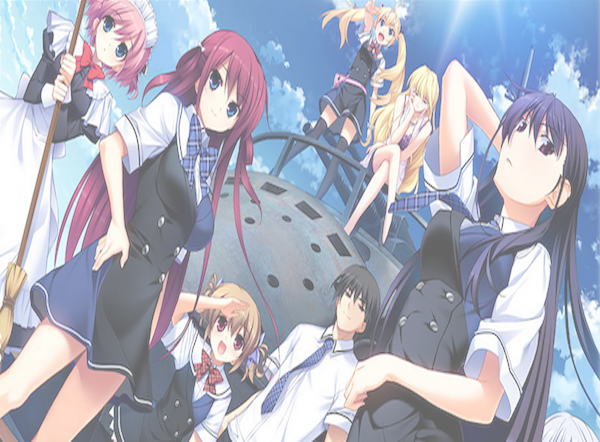

Le Fruit De La Grisaia
Mihama Academy is a prison-like school built to preserve "fruit" that has fallen too far from its tree. It is home to five female students who each have their own reasons for enrolling in the academy and live their life idly within the walls of Mihama. One day, Kazami Yuuji—the institute's first male student—arrives and throws the orderly rhythm of Mihama off balance. Is Yuuji what the girls need to grab hold of their lives once more, or will the weight of their pasts prove too steep a wall to overcome? Or, is his past even heavier than any of the others?
